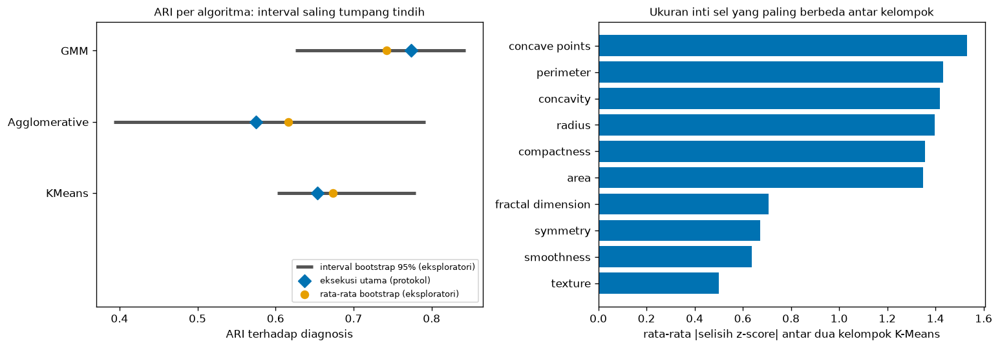

Bab 7 — Results Presentation and Discussion¶
Learning Objectives¶
Setelah mempelajari bab ini, kamu mampu:
- Membedakan hasil, interpretasi, pembahasan terhadap penelitian terdahulu, dan keterbatasan.
- Menyusun tabel dan gambar hasil clustering yang bisa dibaca sendiri.
- Membandingkan algoritma dan konfigurasi tanpa menyimpulkan lebih dari yang didukung data.
- Menggambarkan karakteristik kelompok dan menjelaskan kemiripan serta perbedaannya.
- Menghubungkan temuan dengan pertanyaan riset (RQ1 sampai RQ3).
- Membahas hasil yang tidak terduga tanpa menyembunyikannya.
- Menyatakan keterbatasan dan sumber bias dengan jujur.
- Memeriksa bahwa angka di teks bisa dilacak ke berkas hasil, dan menyaring kata-kata berlebihan.
Introduction¶
Bab 6 menghasilkan angka. Angka itu belum menjadi pengetahuan. Antara angka dan kesimpulan ada langkah yang menentukan mutu penelitian: menyajikan hasil dan membahasnya.
Di sinilah banyak penelitian clustering tergelincir. Beberapa kesalahan khas:
- Angka benar, tetapi kalimatnya mengklaim lebih dari angkanya. Misalnya "GMM adalah algoritma terbaik" padahal selisihnya kecil dan tidak jelas melampaui kebisingan sampel.
- Hasil, tafsiran, dan dugaan dicampur dalam satu paragraf, sehingga pembaca tidak tahu mana yang diamati dan mana yang dikarang.
- Hasil yang tidak nyaman, seperti DBSCAN yang tidak menemukan konfigurasi valid, dihilangkan diam-diam.
- Kelompok diberi nama bermakna ("kelompok ganas") seolah itu temuan, padahal itu label dari luar.
Bab ini mengajarkan cara menghindarinya. Alat utamanya sederhana: buku bukti (claim ledger) yang menyimpan setiap kalimat bersama jenis dan buktinya, dan pemeriksa yang memastikan angka di teks berasal dari berkas hasil, bukan dari ingatan.
Satu hal penting: bab ini juga menunjukkan bagaimana sebuah analisis tambahan mengubah cara kita menulis. Bootstrap eksploratori akan memperlihatkan bahwa keunggulan GMM atas K-Means pada ARI tidak jelas melampaui ketidakpastian sampel. Tanpa analisis itu, kalimat yang tampak wajar ("GMM paling selaras dengan diagnosis") akan terlalu kuat.
Prasyarat
- Bab 6: skrip bab ini membaca berkas
06_*hasil Bab 6. Jalankan skrip Bab 2, 4, 5, dan 6 lebih dulu. - Level 6 Bab 10: struktur laporan eksperimen dan pemeriksa kata berlebihan. Bab ini memperluasnya ke tingkat penelitian dengan pembahasan terhadap pustaka.
Fundamental Concepts¶
| Istilah | Arti |
|---|---|
| Result (hasil) | Apa yang diamati: angka, tabel, gambar. Tanpa alasan |
| Interpretation (interpretasi) | Alasan yang ditarik dari hasil, dengan bahasa hati-hati |
| Discussion (pembahasan) | Menempatkan hasil terhadap penelitian terdahulu dan tujuan penelitian |
| Limitation (keterbatasan) | Batas yang membuat hasil tidak boleh digeneralisasi |
| Conjecture (dugaan) | Penjelasan yang masuk akal tetapi belum diuji |
| Claim ledger (buku bukti) | Daftar kalimat penelitian, masing-masing dengan jenis dan bukti |
| Traceability (keterlacakan) | Setiap angka di teks bisa ditunjuk ke berkas sumbernya |
| Bootstrap | Pengambilan sampel berulang dengan pengembalian untuk memperkirakan ketidakpastian |
| Percentile interval | Rentang antara persentil bawah dan atas dari hasil bootstrap |
| Overclaim | Klaim yang lebih kuat daripada bukti |
| Causal claim | Klaim bahwa X menyebabkan Y. Clustering tidak membuktikannya |
Detailed Explanation¶
Empat lapisan yang tidak boleh tercampur¶
Tulisan penelitian yang baik memisahkan empat lapisan. Pembaca harus selalu tahu sedang membaca lapisan yang mana.
| Lapisan | Pertanyaan yang dijawab | Boleh memuat | Contoh kalimat |
|---|---|---|---|
| Hasil | Apa yang terjadi? | Angka, pengamatan | "ARI terhadap baseline: tanpa skala 0,496." |
| Interpretasi | Apa artinya, menurut data ini? | Alasan hati-hati, dugaan yang ditandai | "Skala mengubah pengelompokan pada data ini." |
| Pembahasan | Bagaimana dibanding pengetahuan lain? | Rujukan pustaka, tujuan penelitian | "Sejalan dengan gagasan bahwa evaluasi bergantung konteks." |
| Keterbatasan | Sejauh mana ini berlaku? | Batas data, metode, protokol | "Hanya satu dataset." |
Contoh pencampuran yang buruk:
"K-Means menghasilkan ARI 0,654, membuktikan bahwa sel ganas membentuk kelompok tersendiri karena ukuran inti yang lebih besar."
Kalimat itu mencampur hasil (0,654) dengan tafsiran ("membuktikan"), klaim tentang kategori ("sel ganas"), dan klaim sebab ("karena ukuran"). Versi yang dipisah:
- Hasil: "ARI K-Means terhadap diagnosis adalah 0,654."
- Interpretasi: "Pengelompokan itu cukup selaras dengan diagnosis pada data ini."
- Keterbatasan: "Kesejajaran tidak menunjukkan penyebab, dan K = 2 dipengaruhi jumlah kelas."
Menyusun hasil¶
Urutkan hasil mengikuti pertanyaan riset, bukan urutan kamu menjalankannya. Untuk tiap pertanyaan, sajikan: (1) apa yang diukur, (2) angka utama, (3) rentang atau ketidakpastian, dan (4) satu kalimat penghubung ke pertanyaan.
| Pertanyaan | Hasil yang disajikan |
|---|---|
| RQ1 kestabilan | ARI antar-seed dan antar-subsampel, dengan rata-rata dan minimum |
| RQ2 kepekaan skala | ARI terhadap baseline tiap perlakuan, dibanding ambang yang ditetapkan sebelumnya |
| RQ3 keselarasan | Metrik internal dan eksternal tiap algoritma, plus keterangan bila ada yang tidak punya hasil |
| Sensitivitas K | Silhouette terhadap K |
| Profil | Ciri tiap kelompok dan tabulasi silang dengan label |
Menyajikan metrik: tabel dan gambar¶
Tabel yang baik bisa dibaca sendiri tanpa teks di sekitarnya.
- Judul menyatakan isinya dan kondisi pentingnya (misalnya "K = 2, ruang baseline").
- Arah metrik dicantumkan di kepala kolom. Silhouette dan Calinski-Harabasz lebih baik bila naik, Davies-Bouldin lebih baik bila turun. Tanpa keterangan ini pembaca bisa salah menilai.
- Angka diformat konsisten: jumlah desimal sama, koma desimal untuk bahasa Indonesia.
- Sel kosong dijelaskan. Pada Tabel 1, DBSCAN tidak punya angka karena tidak ada konfigurasi valid, dan itu tertulis di tabel, bukan baris yang dihapus.
- Jangan menyorot "yang terbaik" tanpa menyebut ukurannya, karena yang terbaik bisa berbeda antar metrik.
Gambar yang baik menjawab satu pertanyaan, punya sumbu berlabel, tidak bergantung pada warna saja (gunakan bentuk penanda berbeda), dan menunjukkan ketidakpastian bila ada. Gambar bab ini memperlihatkan ARI per algoritma dengan interval bootstrap, bukan hanya satu angka.
Membandingkan algoritma dan konfigurasi¶
Perbandingan yang jujur melaporkan tiga hal:
- Angka tiap algoritma di ruang dan data yang sama.
- Apakah selisihnya lebih besar daripada kebisingan. Selisih ARI 0,12 tampak besar, tetapi bila interval ketidakpastiannya lebar, selisih itu belum meyakinkan.
- Perbedaan antar jenis metrik. Pada eksperimen kita, K-Means unggul pada ketiga metrik internal, sedangkan GMM unggul pada ARI dan NMI terhadap diagnosis. Dua jenis metrik ini menjawab pertanyaan berbeda, jadi tidak ada satu urutan tunggal.
Jangan menulis "algoritma X terbaik". Tulis "X unggul pada metrik Y dalam kondisi Z".
Ketidakpastian: bootstrap eksploratori¶
Satu eksekusi menghasilkan satu angka (misalnya ARI GMM 0,774), tetapi data hanya satu sampel dari proses yang lebih luas. Bootstrap menirukan pengambilan sampel baru: ambil 569 baris dengan pengembalian, ulangi seluruh alur (penyamaan skala, clustering, ARI), lakukan 200 kali, lalu lihat sebaran hasilnya.
Dari sebaran itu kita ambil interval persentil 95 persen: nilai pada persentil 2,5 dan 97,5. Untuk perbandingan dua algoritma, kita menghitung selisih ARI per ulangan lalu melihat apakah intervalnya mencakup nol.
Analisis ini eksploratori
Bootstrap tidak ada di protokol Bab 5. Ia ditambahkan setelah melihat hasil Bab 6, jadi diberi label eksploratori di setiap tempat. Ia juga tidak memperhitungkan ketergantungan lain (misalnya baris duplikat hasil pengambilan ulang) dan tidak mengoreksi perbandingan ganda. Fungsinya mengingatkan kehati-hatian, bukan menjadi uji hipotesis resmi.
Menggambarkan karakteristik kelompok¶
Profil kelompok menjawab: fitur apa yang berbeda antara kelompok? Pada data kita, kita merangkum selisih rata-rata z-score tiap fitur, lalu mengelompokkannya menurut ukuran inti sel (radius, texture, perimeter, area, smoothness, compactness, concavity, concave points, symmetry, fractal dimension) dan menurut jenis statistik (mean, error, worst).
Cara membacanya:
- Deskripsikan perbedaan, bukan menjelaskan sebab. "Kelompok 1 memiliki nilai tinggi pada fitur kontur" adalah deskripsi.
- Nomor kelompok sembarang. "Kelompok 0" tidak lebih baik atau lebih awal dari "kelompok 1".
- Jangan menamai kelompok dengan label dari luar sebagai temuan. Tabulasi silang dengan diagnosis memperlihatkan keselarasan, tetapi tidak membuat kelompok itu "kelompok ganas".
- Sebut kemiripan juga. Pada data kita, fitur tekstur, simetri, kehalusan, dan dimensi fraktal berbeda jauh lebih kecil antar kelompok daripada fitur kontur dan ukuran.
Menghubungkan temuan dengan pertanyaan riset¶
Setiap pertanyaan harus dijawab dengan jawaban yang dibatasi: apa yang didukung data, dengan angka, dan apa yang tidak.
| Pertanyaan | Jawaban yang dibatasi | Yang tidak bisa dikatakan |
|---|---|---|
| RQ1 Seberapa stabil? | Pada dataset ini K-Means (K = 2, data terstandarisasi) tampak konsisten: ARI antar-seed rata-rata 0,981, subsampel 0,964 (minimum 0,871) | Bahwa kelompok itu bermakna atau nyata |
| RQ2 Berubah bila tidak distandarkan? | Ya: tanpa skala ARI 0,496, MinMaxScaler 0,896 (di bawah ambang 0,95) | Bahwa penyamaan skala selalu penting pada data lain |
| RQ3 Seberapa selaras dengan diagnosis? | Cukup selaras (ARI 0,575 sampai 0,774); GMM tertinggi pada eksekusi utama, tetapi selisihnya tidak jelas melampaui ketidakpastian sampel | Bahwa satu algoritma terbaik, atau bahwa clustering dapat mendiagnosis |
Pembahasan terhadap penelitian terdahulu¶
Di Bab 3 kita hanya membaca abstrak atau ringkasan lima sumber. Itu membatasi apa yang boleh dikatakan. Ada tiga tingkat hubungan yang bisa kamu tulis:
| Tingkat | Wujud kalimat | Syarat |
|---|---|---|
| Sejalan dengan | "Hasil ini sejalan dengan gagasan X (Penulis, tahun)" | Kamu memahami gagasannya dan hasilmu konsisten dengannya |
| Berbeda dari | "Berbeda dari temuan X" | Kamu membandingkan kondisi yang setara (data, metrik, praproses) |
| Tidak dapat dibandingkan | "Angka tidak dibandingkan karena kondisinya berbeda" | Kondisinya memang tidak setara |
Pada proyek kita, tidak ada makalah di matriks yang memakai data, protokol, dan metrik yang sama. Maka kita tidak membandingkan angka. Kita hanya menulis hubungan konseptual:
- Gagasan bahwa pengelompokan yang baik stabil terhadap gangguan (Ben-Hur dkk., 2002) sejalan dengan cara RQ1 diukur, tetapi stabil tidak membuktikan adanya struktur.
- Perbedaan peringkat antara metrik internal dan eksternal sejalan dengan pandangan bahwa evaluasi bergantung pada konteks dan tujuan (von Luxburg dkk., 2012; Hennig, 2015).
- Pemakaian ARI dan NMI yang dikoreksi untuk kebetulan mengikuti pembahasan Vinh dkk. (2010).
Jangan melebih-lebihkan hubungan dengan pustaka
Karena sumber hanya dibaca abstrak atau ringkasannya, kalimat pembahasan harus mencerminkan itu. Mengatakan "hasil kami berbeda dari X" tanpa membaca X secara penuh dan tanpa kondisi setara adalah klaim yang tidak berdasar.
Hasil yang tidak terduga¶
Hasil tak terduga bukan aib. Ia bahan pembahasan yang paling berharga, selama dilaporkan dan dijelaskan dengan hati-hati. Pada proyek ini ada tiga:
- DBSCAN tidak punya konfigurasi valid (semua satu kelompok). Laporkan, jelaskan aturan, dan beri dugaan (kepadatan relatif seragam pada 30 dimensi terstandarisasi) yang ditandai belum diuji.
- GMM unggul pada ARI tetapi paling rendah pada metrik internal, dan keunggulannya pada ARI tidak jelas melampaui ketidakpastian sampel.
- MinMaxScaler tidak memenuhi ambang praktis sama (ARI 0,896 di bawah 0,95), meskipun ia juga menyamakan skala. Cara menyamakan skala berbeda ternyata memberi pengelompokan berbeda.
Untuk tiap hasil tak terduga: tulis apa yang terjadi (hasil), penjelasan yang mungkin sebagai dugaan, dan apa yang akan menguji dugaan itu.
Keterbatasan dan sumber bias¶
Daftar keterbatasan yang baik spesifik pada penelitianmu, bukan kalimat umum. Pada proyek kita:
| Keterbatasan | Dampaknya |
|---|---|
| Satu dataset, 569 sampel | Tidak bisa digeneralisasi ke data lain |
| K = 2 dipengaruhi jumlah kelas diagnosis | ARI terhadap diagnosis tidak independen dari pilihan itu |
| Protokol ditulis setelah demonstrasi Bab 1 | Tidak sepenuhnya buta terhadap data |
| Hanya DBSCAN yang disetel | Upaya penyetelan tidak setara |
| Tinjauan pustaka terarah, abstrak saja | Pembahasan pustaka terbatas |
| Persetujuan etik dan de-identifikasi tidak diketahui | Batas penggunaan data |
| Bootstrap dan pangsa varians eksploratori | Bukan bagian dari protokol |
Ciri keterbatasan yang jujur: ia mengurangi klaim, bukan sekadar memenuhi daftar periksa.
Menghindari kesimpulan sebab-akibat¶
Clustering menunjukkan bahwa titik-titik mirip menurut fitur. Ia tidak menunjukkan mengapa. Dua jebakan umum:
- "Ukuran inti sel menyebabkan sel ganas." Kelompok yang berbeda ukuran dan berbeda proporsi diagnosis tidak membuktikan sebab.
- "Karena skala besar, fitur area mendominasi." Kalimat ini boleh ditulis sebagai dugaan bila ada bukti pendukung (pangsa varians 99,1 persen pada dua fitur), tetapi belum diuji langsung (misalnya dengan membuang kedua fitur itu dan melihat hasilnya).
Buku bukti dan pemeriksaan otomatis¶
Cara praktis menjaga disiplin: simpan setiap kalimat penelitian sebagai satu baris dengan jenis (hasil, interpretasi, pembahasan, keterbatasan) dan bukti (berkas atau kode). Dua pemeriksaan sederhana lalu bisa dijalankan:
- Keterlacakan angka: setiap angka desimal di teks harus ada di daftar fakta yang dibuat dari berkas hasil.
- Kata berlebihan: kata seperti "membuktikan", "terbukti", "pasti", "menyebabkan", dan "terbaik" ditandai.
Kedua pemeriksa ini hanyalah alat bantu. Saat bab ini disusun, pemeriksa pertama sempat salah membaca angka negatif (tanda minus terlewat) dan pemeriksa kedua sempat menandai kata "pasti" di dalam "ketidakpastian". Keduanya diperbaiki dengan pencocokan yang lebih tepat. Itu pelajaran nyata: pemeriksa otomatis perlu diuji sama seperti kode lain.
Kesalahan umum¶
- Mencampur hasil, tafsiran, dan dugaan dalam satu kalimat.
- Menyebut algoritma "terbaik" tanpa menyebut ukuran dan ketidakpastiannya.
- Menyembunyikan hasil yang tidak nyaman (DBSCAN tanpa konfigurasi valid).
- Menyorot hanya satu jenis metrik yang mendukung cerita.
- Menamai kelompok dengan label luar sebagai temuan.
- Menyimpulkan sebab-akibat dari kelompok.
- Membandingkan angka dengan makalah lain tanpa kondisi setara.
- Melaporkan analisis eksploratori seolah rencana awal.
- Menulis keterbatasan umum yang tidak mengurangi klaim.
- Mengetik angka di teks dari ingatan, bukan dari berkas hasil.
Mathematical Foundation¶
Selisih ARI dan interval bootstrap. Untuk dua algoritma \( A \) dan \( B \), pada ulangan bootstrap ke-\( b \) (\( b = 1,\dots,B \)) kita menghitung
lalu mengurutkan \( \Delta_1,\dots,\Delta_B \). Interval persentil 95 persen adalah nilai pada persentil ke-2,5 dan ke-97,5 dari urutan itu. Bila interval mencakup 0, selisih tidak jelas berbeda dari nol pada sampel bootstrap ini. Dalam bab ini \( B = 200 \), dan setiap ulangan mengambil \( n = 569 \) baris dengan pengembalian.
Pangsa varians fitur \( j \) pada data tanpa skala:
dengan \( p = 30 \). Karena K-Means meminimalkan jumlah kuadrat jarak, fitur dengan pangsa varians sangat besar akan mendominasi jarak bila skala tidak disamakan.
Rata-rata selisih mutlak per ukuran. Untuk ukuran \( m \) (misalnya concave points) yang terdiri atas tiga fitur (mean, error, worst), kita memakai rata-rata \( |\,\bar z_{1} - \bar z_{0}\,| \) atas ketiga fitur, dengan \( \bar z_{c} \) rata-rata z-score kelompok \( c \).
Python Implementation¶
Skrip lengkapnya ada di examples/level-7/07_results_presentation_and_discussion.py, dan notebook-nya di notebooks/level-7/07-results-presentation-and-discussion.ipynb. Setiap potongan kode diikuti penjelasannya.
Konteks masalah: mengubah angka Bab 6 menjadi bagian Hasil dan Pembahasan yang jujur, dengan bukti dan pemeriksaan.
Data: bukan dataset baru. Skrip membaca berkas 06_* dari Bab 6. Dua analisis tambahan memakai data penelitian lagi dan diberi label eksploratori.
Pustaka: NumPy, pandas, Matplotlib, scikit-learn, serta json dan re dari pustaka standar. Jalankan skrip Bab 2, 4, 5, dan 6 lebih dulu. Eksekusi penuh sekitar satu menit karena bootstrap.
Bagian A — Siapkan alat dan baca hasil Bab 6¶
import json
import re
import numpy as np
import pandas as pd
import matplotlib.pyplot as plt
from sklearn.cluster import AgglomerativeClustering, KMeans
from sklearn.metrics import adjusted_rand_score
from sklearn.mixture import GaussianMixture
from sklearn.preprocessing import StandardScaler
import _research as rs
RESULTS = rs.RESULTS_DIR
SEED = 42
protocol = json.loads((RESULTS / "05_protocol.json").read_text(encoding="utf-8"))
rq1 = json.loads((RESULTS / "06_rq1_summary.json").read_text(encoding="utf-8"))
rq2 = pd.read_csv(RESULTS / "06_rq2_scaling.csv", index_col="perlakuan")
rq3 = pd.read_csv(RESULTS / "06_rq3_algorithms.csv", index_col="algoritma")
grid = pd.read_csv(RESULTS / "06_dbscan_grid.csv")
ksens = pd.read_csv(RESULTS / "06_k_sensitivity.csv", index_col="k")
profile = pd.read_csv(RESULTS / "06_cluster_profile.csv", index_col=0)
crosstab = pd.read_csv(RESULTS / "06_crosstab_diagnosis.csv", index_col=0)
manifest = json.loads((RESULTS / "06_run_manifest.json").read_text(encoding="utf-8"))
clarifications = json.loads((RESULTS / "06_clarifications.json").read_text(encoding="utf-8"))
print("Eksekusi dari Bab 6:", manifest["eksekusi_dijalankan"], "| klarifikasi:", len(clarifications))
def fmt(value, digits=3):
"""Angka dengan koma desimal, seperti penulisan bahasa Indonesia."""
return f"{value:.{digits}f}".replace(".", ",")
Penjelasan: kita membaca protokol, ringkasan RQ1 (JSON), serta tabel RQ2, RQ3, grid DBSCAN, sensitivitas K, profil kelompok, dan tabulasi silang (CSV). index_col=... menjadikan satu kolom sebagai indeks baris agar mudah dipanggil, misalnya rq3.loc["GMM"]. Fungsi fmt(value, digits) memformat angka dengan koma desimal: f"{value:.{digits}f}" membulatkan, .replace(".", ",") mengganti titik dengan koma. Seluruh angka di teks nantinya melewati fungsi ini.
Bagian B — Tabel hasil¶
def md_table(frame, digits=3):
header = "| " + " | ".join(map(str, frame.columns)) + " |"
divider = "|" + "|".join("---" for _ in frame.columns) + "|"
rows = []
for row in frame.itertuples(index=False):
rows.append("| " + " | ".join(fmt(v, digits) if isinstance(v, (float, np.floating)) and not np.isnan(v) else ("-" if isinstance(v, float) else str(v)) for v in row) + " |")
return "\n".join([header, divider, *rows])
table_rq3 = rq3.reset_index()[["algoritma", "kelompok", "silhouette", "davies_bouldin", "calinski_harabasz", "ari_vs_diagnosis", "nmi_vs_diagnosis"]]
table_rq3.columns = ["Algoritma", "Kelompok", "Silhouette (naik lebih baik)", "Davies-Bouldin (turun lebih baik)", "Calinski-Harabasz (naik lebih baik)", "ARI vs diagnosis", "NMI vs diagnosis"]
dbscan_row = pd.DataFrame([["DBSCAN", "tidak ada konfigurasi valid", np.nan, np.nan, np.nan, np.nan, np.nan]], columns=table_rq3.columns)
table_rq3 = pd.concat([table_rq3, dbscan_row], ignore_index=True)
table_rq2 = rq2.reset_index().rename(columns={"perlakuan": "Perlakuan skala", "ari_mean": "ARI rata-rata", "ari_min": "ARI minimum", "ari_max": "ARI maksimum"})
tables = {
"Tabel 1. RQ3, perbandingan algoritma (K = 2, ruang baseline)": md_table(table_rq3),
"Tabel 2. RQ2, ARI terhadap baseline menurut perlakuan skala": md_table(table_rq2),
}
for title, text in tables.items():
print(title)
print(text)
Tabel 1. RQ3, perbandingan algoritma (K = 2, ruang baseline)
| Algoritma | Kelompok | Silhouette (naik lebih baik) | Davies-Bouldin (turun lebih baik) | Calinski-Harabasz (naik lebih baik) | ARI vs diagnosis | NMI vs diagnosis |
|---|---|---|---|---|---|---|
| KMeans | 2 | 0,343 | 1,321 | 267,692 | 0,654 | 0,532 |
| Agglomerative | 2 | 0,339 | 1,370 | 248,629 | 0,575 | 0,457 |
| GMM | 2 | 0,314 | 1,377 | 247,284 | 0,774 | 0,661 |
| DBSCAN | tidak ada konfigurasi valid | - | - | - | - | - |
Tabel 2. RQ2, ARI terhadap baseline menurut perlakuan skala
| Perlakuan skala | ARI rata-rata | ARI minimum | ARI maksimum | proporsi_ari>=0.95 |
|---|---|---|---|---|
| StandardScaler (baseline) | 0,982 | 0,965 | 1,000 | 1,000 |
| tanpa skala | 0,496 | 0,496 | 0,496 | 0,000 |
| MinMaxScaler | 0,896 | 0,896 | 0,896 | 0,000 |
Penjelasan:
md_table(frame)mengubah tabel pandas menjadi teks tabel Markdown.frame.itertuples(index=False)mengiterasi baris, dan untuk tiap sel: bila bilangan desimal bukan kosong, diformat denganfmt; bila kosong (np.nan), ditulis-; selain itu diubah menjadi teks.- Kepala kolom Tabel 1 memuat arah metrik ("naik lebih baik" atau "turun lebih baik").
dbscan_rowmenambahkan baris DBSCAN dengan keterangan "tidak ada konfigurasi valid" dan sel kosong, lalupd.concatmenggabungkannya. Dengan begitu DBSCAN tetap muncul di tabel.- Dua tabel disimpan di dictionary
tablesdan dicetak.
Bagian C — Ciri yang berbeda antar kelompok¶
def split_name(name):
if name.startswith("mean "):
return "mean", name[5:]
if name.startswith("worst "):
return "worst", name[6:]
return "error", name[:-6]
parts = pd.DataFrame([split_name(n) for n in profile.index], columns=["statistik", "ukuran"], index=profile.index)
profile_parts = profile.join(parts)
profile_parts["selisih_mutlak"] = profile_parts["selisih"].abs()
by_measure = profile_parts.groupby("ukuran")["selisih_mutlak"].mean().sort_values(ascending=False)
by_statistic = profile_parts.groupby("statistik")["selisih_mutlak"].mean().sort_values(ascending=False)
print("Rata-rata |selisih z-score| menurut ukuran inti sel:")
print(by_measure.round(2).to_string())
print("Menurut jenis statistik:")
print(by_statistic.round(2).to_string())
Rata-rata |selisih z-score| menurut ukuran inti sel:
ukuran
concave points 1.53
perimeter 1.43
concavity 1.42
radius 1.40
compactness 1.36
area 1.35
fractal dimension 0.71
symmetry 0.67
smoothness 0.64
texture 0.50
Menurut jenis statistik:
statistik
worst 1.28
mean 1.22
error 0.80
Penjelasan: split_name memecah nama fitur menjadi jenis statistik dan ukuran: nama berawalan "mean " atau "worst " dipotong awalannya, sisanya (berakhiran " error") dipotong akhirannya. profile.index adalah nama 30 fitur, pd.DataFrame([...]) membuat tabel dua kolom dari hasil pemecahan, dan profile.join(parts) menempelkannya ke profil. groupby("ukuran")["selisih_mutlak"].mean() menghitung rata-rata selisih mutlak per ukuran (tiga fitur per ukuran), lalu .sort_values(ascending=False) mengurutkannya.
Bagian D — Analisis eksploratori¶
# EKSPLORATORI 1: bootstrap data (200 ulangan) untuk melihat ketidakpastian ARI terhadap diagnosis.
X_df, y = rs.load_wdbc()
X_raw = X_df.to_numpy(dtype=float)
n = len(X_raw)
rng = np.random.default_rng(SEED)
boot = {"KMeans": [], "Agglomerative": [], "GMM": []}
for _ in range(200):
idx = rng.choice(n, size=n, replace=True)
Xs = StandardScaler().fit_transform(X_raw[idx])
truth = y.to_numpy()[idx]
boot["KMeans"].append(adjusted_rand_score(truth, KMeans(n_clusters=2, n_init=10, random_state=SEED).fit_predict(Xs)))
boot["Agglomerative"].append(adjusted_rand_score(truth, AgglomerativeClustering(n_clusters=2, linkage="ward").fit_predict(Xs)))
boot["GMM"].append(adjusted_rand_score(truth, GaussianMixture(n_components=2, covariance_type="full", n_init=5, random_state=SEED).fit_predict(Xs)))
boot = pd.DataFrame(boot)
ci = pd.DataFrame({"rata_rata": boot.mean(), "bawah_2.5": boot.quantile(0.025), "atas_97.5": boot.quantile(0.975)})
diffs = pd.DataFrame({"GMM - KMeans": boot["GMM"] - boot["KMeans"], "KMeans - Agglomerative": boot["KMeans"] - boot["Agglomerative"], "GMM - Agglomerative": boot["GMM"] - boot["Agglomerative"]})
diff_ci = pd.DataFrame({"rata_rata": diffs.mean(), "bawah_2.5": diffs.quantile(0.025), "atas_97.5": diffs.quantile(0.975), "proporsi_positif": (diffs > 0).mean()})
print("EKSPLORATORI, bootstrap 200 ulangan, ARI vs diagnosis:")
print(ci.round(3).to_string())
print("Selisih ARI berpasangan:")
print(diff_ci.round(3).to_string())
# EKSPLORATORI 2: pangsa varians fitur pada data TANPA skala.
variance = X_df.var()
share = (variance / variance.sum()).sort_values(ascending=False)
print("Pangsa varians terbesar (data tanpa skala):")
print((100 * share.head(3)).round(2).to_string())
print("Dua fitur teratas bersama:", round(float(100 * share.head(2).sum()), 2), "persen dari total varians")
EKSPLORATORI, bootstrap 200 ulangan, ARI vs diagnosis:
rata_rata bawah_2.5 atas_97.5
KMeans 0.674 0.602 0.780
Agglomerative 0.617 0.393 0.792
GMM 0.742 0.626 0.843
Selisih ARI berpasangan:
rata_rata bawah_2.5 atas_97.5 proporsi_positif
GMM - KMeans 0.068 -0.012 0.157 0.940
KMeans - Agglomerative 0.057 -0.112 0.278 0.695
GMM - Agglomerative 0.126 -0.032 0.343 0.905
Pangsa varians terbesar (data tanpa skala):
worst area 71.73
mean area 27.41
area error 0.46
Dua fitur teratas bersama: 99.14 persen dari total varians
Penjelasan:
rs.load_wdbc()memuat data, danX_df.to_numpy(dtype=float)mengubahnya menjadi array.- Bootstrap:
rng.choice(n, size=n, replace=True)mengambil 569 indeks dengan pengembalian, sehingga sebagian baris muncul lebih dari sekali dan sebagian tidak muncul. Pada tiap ulangan,StandardScalerdihitung ulang pada sampel itu, tiga algoritma dilatih, dan ARI terhadap diagnosis (y.to_numpy()[idx], label yang ikut terambil) dihitung. Hasilnya disimpan diboot. boot.quantile(0.025)danboot.quantile(0.975)memberi batas interval 95 persen.diffsmenghitung selisih ARI per ulangan untuk tiga pasangan algoritma.(diffs > 0).mean()menghitung proporsi ulangan di mana selisih positif.- Pangsa varians:
X_df.var()menghitung varians tiap fitur, dibagi jumlahnya.share.head(2).sum()menjumlahkan dua yang terbesar. - Semua cetakan diawali kata EKSPLORATORI supaya tidak tercampur dengan hasil utama.
Bagian E — Daftar angka yang boleh dikutip¶
# Semua angka yang boleh dikutip di teks. Teks dibuat dari daftar ini, bukan diketik tangan.
km, ag, gm = rq3.loc["KMeans"], rq3.loc["Agglomerative"], rq3.loc["GMM"]
facts = {
"seed_mean": rq1["stab_seed_mean"], "seed_min": rq1["stab_seed_min"],
"sub_mean": rq1["stab_sub_mean"], "sub_min": rq1["stab_sub_min"], "sub_max": rq1["stab_sub_max"],
"std_base": rq2.loc["StandardScaler (baseline)", "ari_mean"], "std_none": rq2.loc["tanpa skala", "ari_mean"], "std_minmax": rq2.loc["MinMaxScaler", "ari_mean"],
"threshold": protocol["aturan_keputusan"]["ambang_praktis_sama_ARI"],
"km_sil": km["silhouette"], "ag_sil": ag["silhouette"], "gm_sil": gm["silhouette"],
"km_db": km["davies_bouldin"], "ag_db": ag["davies_bouldin"], "gm_db": gm["davies_bouldin"],
"km_ari": km["ari_vs_diagnosis"], "ag_ari": ag["ari_vs_diagnosis"], "gm_ari": gm["ari_vs_diagnosis"],
"km_nmi": km["nmi_vs_diagnosis"], "ag_nmi": ag["nmi_vs_diagnosis"], "gm_nmi": gm["nmi_vs_diagnosis"],
"noise_min": grid["noise_persen"].min(), "noise_max": grid["noise_persen"].max(),
"malignant_c0": crosstab.loc[0, "malignant"] / crosstab.loc[0].sum(), "malignant_c1": crosstab.loc[1, "malignant"] / crosstab.loc[1].sum(),
"top2_share": 100 * float(share.head(2).sum()),
"gm_minus_km_low": diff_ci.loc["GMM - KMeans", "bawah_2.5"], "gm_minus_km_high": diff_ci.loc["GMM - KMeans", "atas_97.5"],
"km_minus_ag_low": diff_ci.loc["KMeans - Agglomerative", "bawah_2.5"], "km_minus_ag_high": diff_ci.loc["KMeans - Agglomerative", "atas_97.5"],
"c1_top_measure_diff": by_measure.iloc[0], "c1_bottom_measure_diff": by_measure.iloc[-1],
}
counts = {"c0": int(crosstab.loc[0].sum()), "c1": int(crosstab.loc[1].sum()), "off": int(crosstab.loc[0, "malignant"] + crosstab.loc[1, "benign"]), "n": int(crosstab.values.sum())}
facts["off_percent"] = 100 * counts["off"] / counts["n"]
pool = set()
for value in facts.values():
for digits in (1, 2, 3):
pool.add(fmt(float(value), digits))
print("Jumlah fakta yang boleh dikutip:", len(facts), "| bentuk angka yang sah:", len(pool))
Penjelasan: facts adalah dictionary satu lapis: nama fakta menjadi angka, semuanya diambil dari tabel hasil dan analisis eksploratori (bukan diketik). rq3.loc["KMeans"] mengambil baris K-Means sebagai deret. counts menyimpan bilangan bulat dari tabulasi silang. pool adalah himpunan semua bentuk tulisan angka yang sah: untuk setiap fakta, tiga pembulatan (1, 2, dan 3 desimal) diformat dengan fmt lalu dimasukkan. Himpunan ini dipakai pemeriksa keterlacakan.
Bagian F — Buku bukti¶
F = lambda key, d=3: fmt(float(facts[key]), d)
ledger = []
def add(kind, text, evidence):
ledger.append({"id": f"{kind[0].upper()}{sum(1 for e in ledger if e['jenis'] == kind) + 1}", "jenis": kind, "kalimat": text, "bukti": evidence})
# HASIL: hanya angka dan pengamatan
add("hasil", f"Pada 20 seed, ARI rata-rata antar-pasangan K-Means (K = 2) adalah {F('seed_mean')} (minimum {F('seed_min')}; 190 pasangan).", "06_rq1_summary.json")
add("hasil", f"Pada 50 subsampel (80 persen), ARI rata-rata terhadap pengelompokan data penuh adalah {F('sub_mean')} dengan rentang {F('sub_min')} sampai {F('sub_max')}.", "06_rq1_summary.json")
add("hasil", f"ARI terhadap baseline: StandardScaler {F('std_base')}, tanpa skala {F('std_none')}, MinMaxScaler {F('std_minmax')}. Ambang praktis sama adalah {F('threshold', 2)}.", "06_rq2_scaling.csv")
add("hasil", f"Silhouette: K-Means {F('km_sil')}, Agglomerative {F('ag_sil')}, GMM {F('gm_sil')}. ARI terhadap diagnosis: K-Means {F('km_ari')}, Agglomerative {F('ag_ari')}, GMM {F('gm_ari')}.", "06_rq3_algorithms.csv")
add("hasil", f"Delapan konfigurasi DBSCAN semuanya menghasilkan satu kelompok, dengan noise {F('noise_min', 1)} sampai {F('noise_max', 1)} persen; tidak ada yang valid menurut protokol.", "06_dbscan_grid.csv")
add("hasil", f"Pada K-Means baseline, proporsi malignant adalah {F('malignant_c0')} pada kelompok 0 ({counts['c0']} titik) dan {F('malignant_c1')} pada kelompok 1 ({counts['c1']} titik).", "06_crosstab_diagnosis.csv")
add("hasil", f"(Eksploratori) Selisih ARI terhadap diagnosis, GMM dikurangi K-Means, memiliki interval bootstrap 95 persen {F('gm_minus_km_low')} sampai {F('gm_minus_km_high')}; K-Means dikurangi Agglomerative {F('km_minus_ag_low')} sampai {F('km_minus_ag_high')}.", "bootstrap 200 ulangan, bagian explore")
add("hasil", f"(Eksploratori) Pada data tanpa skala, dua fitur dengan varians terbesar menyumbang {F('top2_share', 1)} persen dari total varians.", "bagian explore")
# INTERPRETASI: alasan dari hasil, dengan bahasa hati-hati
add("interpretasi", "Pengelompokan K-Means dua kelompok pada data terstandarisasi tampak konsisten terhadap seed dan pengambilan sampel pada dataset ini.", "H1, H2")
add("interpretasi", "Konsisten tidak sama dengan bermakna: hasil ini tidak menunjukkan bahwa kelompok mencerminkan kategori nyata.", "H1, H2")
add("interpretasi", f"Cara menyamakan skala mengubah pengelompokan pada data ini: tanpa skala ({F('std_none')}) jauh berbeda dari baseline, dan MinMaxScaler ({F('std_minmax')}) pun tidak memenuhi ambang praktis sama ({F('threshold', 2)}).", "H3")
add("interpretasi", f"Dugaan: pada data tanpa skala, jarak didominasi beberapa fitur berskala besar. Dua fitur teratas menyumbang {F('top2_share', 1)} persen dari total varians, sejalan dengan dugaan ini, tetapi dugaan belum diuji langsung.", "H8")
add("interpretasi", f"Peringkat algoritma berbeda antar jenis metrik: K-Means unggul pada metrik internal, GMM unggul pada ARI dan NMI terhadap diagnosis pada eksekusi utama. Namun pada analisis eksploratori, interval selisih ARI GMM dikurangi K-Means mencakup nol ({F('gm_minus_km_low')} sampai {F('gm_minus_km_high')}), sehingga keunggulan GMM tidak jelas melampaui ketidakpastian sampel.", "H4, H7")
add("interpretasi", "Tidak ada algoritma yang dapat dinyatakan unggul secara umum tanpa menyebut tujuan evaluasinya.", "H4")
add("interpretasi", "Kelompok 1 pada K-Means ditandai nilai tinggi pada fitur kontur dan ukuran (concavity, concave points, perimeter), dan memuat proporsi malignant yang tinggi; ini deskripsi keselarasan, bukan penjelasan sebab.", "H6")
add("interpretasi", "Dugaan: kepadatan titik pada 30 dimensi terstandarisasi relatif seragam sehingga DBSCAN tidak menemukan kelompok terpisah. Dugaan ini belum diuji.", "H5")
# PEMBAHASAN terhadap pustaka (dasar: abstrak atau ringkasan, lihat Bab 3)
add("pembahasan", "Gagasan bahwa pengelompokan yang baik seharusnya stabil terhadap gangguan data (Ben-Hur dkk., 2002) sejalan dengan cara RQ1 diukur; hasil RQ1 konsisten dengan gagasan itu, tetapi tidak membuktikan adanya struktur kelompok.", "L3; abstrak atau ringkasan")
add("pembahasan", "Perbedaan peringkat antara metrik internal dan eksternal sejalan dengan pandangan bahwa evaluasi clustering bergantung pada konteks dan tujuan (von Luxburg dkk., 2012; Hennig, 2015).", "L1, L2; abstrak atau ringkasan")
add("pembahasan", "ARI dan NMI yang dikoreksi untuk kebetulan (Vinh dkk., 2010) dipakai pada validasi eksternal; dengan 569 titik dan dua kelompok, koreksi ini tidak menjadi masalah utama.", "L4; abstrak atau ringkasan")
add("pembahasan", "Angka penelitian ini tidak dibandingkan dengan angka makalah lain karena tidak ada makalah pada matriks Bab 3 yang memakai data, protokol, dan metrik yang sama.", "Bab 3")
# KETERBATASAN
add("keterbatasan", "Hasil berlaku untuk satu dataset (569 sampel) dan konfigurasi yang ditetapkan protokol.", "protokol")
add("keterbatasan", "K = 2 dipengaruhi jumlah kelas diagnosis, sehingga ARI terhadap diagnosis tidak independen dari pilihan itu.", "protokol, pengungkapan")
add("keterbatasan", "Protokol ditulis setelah demonstrasi Bab 1 pada data yang sama, sehingga tidak sepenuhnya buta terhadap data.", "protokol, pengungkapan")
add("keterbatasan", "Hanya DBSCAN yang disetel, sehingga upaya penyetelan antar algoritma tidak setara.", "protokol")
add("keterbatasan", "Tinjauan pustaka bersifat terarah dan kelima sumber hanya dibaca abstrak atau ringkasannya.", "Bab 3")
add("keterbatasan", "Persetujuan etik dan status de-identifikasi data tidak diketahui; tidak ada klaim klinis.", "Bab 4")
add("keterbatasan", "Analisis bootstrap dan pangsa varians bersifat eksploratori dan tidak ada di protokol.", "Bab 5")
ledger_df = pd.DataFrame(ledger)
print(ledger_df["jenis"].value_counts().to_string())
Penjelasan:
F = lambda key, d=3: fmt(float(facts[key]), d)adalah fungsi pendek yang mengambil fakta dan memformatnya. Kalimat hasil dibuat dengan f-string yang memanggilF(...), jadi angkanya otomatis berasal darifacts.add(kind, text, evidence)menambahkan satu baris keledgerdenganidotomatis (huruf awal jenis ditambah nomor urut, misalnya H1, I3, K2) dan menyimpan bukti (berkas atau nomor kalimat).- Isinya dibagi empat jenis: 8 hasil, 8 interpretasi, 4 pembahasan, 7 keterbatasan. Perhatikan bahwa interpretasi yang berupa dugaan menulis kata "Dugaan:" dan menyatakan "belum diuji", dan hasil eksploratori ditandai "(Eksploratori)".
ledger_df["jenis"].value_counts()menghitung jumlah kalimat per jenis.
Bagian G — Memeriksa angka dan kata berlebihan¶
OVERCLAIM = ["membuktikan", "terbukti", "pasti", "menyebabkan", "tidak diragukan", "selalu", "mengonfirmasi", "terbaik"]
def untraceable_numbers(text):
"""Angka desimal berkoma di teks yang tidak ada di daftar fakta."""
found = re.findall(r"-?\d+,\d+", text)
return [x for x in found if x not in pool and x not in {"0,95", "0,9"}]
def overclaim_words(text):
"""Kata berlebihan, kecuali bila 'tidak' atau 'bukan' muncul tepat sebelumnya. Negasi jauh dari katanya bisa terlewat."""
low = text.lower()
found = []
for word in OVERCLAIM:
for match in re.finditer(r"\b" + word + r"\b", low): # kata utuh: "pasti" tidak cocok di dalam "ketidakpastian"
window = low[max(0, match.start() - 12):match.start()]
if "tidak " not in window and "bukan " not in window:
found.append(word)
break
return found
problems = []
for row in ledger:
bad_numbers = untraceable_numbers(row["kalimat"])
bad_words = overclaim_words(row["kalimat"])
if bad_numbers or bad_words:
problems.append((row["id"], bad_numbers, bad_words))
print("Kalimat bermasalah pada buku bukti:", problems if problems else "tidak ada")
demo = [
"ARI GMM terhadap diagnosis sebesar 0,812, membuktikan bahwa GMM adalah algoritma terbaik.",
"Ukuran inti sel menyebabkan kelompok ganas, tidak diragukan lagi.",
]
for sentence in demo:
print("Demo:", sentence)
print(" angka tak terlacak:", untraceable_numbers(sentence), "| kata berlebihan:", overclaim_words(sentence))
Kalimat bermasalah pada buku bukti: tidak ada
Demo: ARI GMM terhadap diagnosis sebesar 0,812, membuktikan bahwa GMM adalah algoritma terbaik.
angka tak terlacak: ['0,812'] | kata berlebihan: ['membuktikan', 'terbaik']
Demo: Ukuran inti sel menyebabkan kelompok ganas, tidak diragukan lagi.
angka tak terlacak: [] | kata berlebihan: ['menyebabkan', 'tidak diragukan']
Penjelasan:
untraceable_numbers(text)memakaire.findall(r"-?\d+,\d+", text)untuk mengambil semua angka desimal berkoma (tanda-?menangkap minus bila ada). Angka yang tidak ada dipooldianggap tak terlacak. Pengecualian hanya untuk "0,95" dan "0,9".overclaim_words(text)mencari kata dariOVERCLAIMdenganre.finditer(r"\b" + word + r"\b", low):\badalah batas kata, sehingga "pasti" tidak cocok di dalam "ketidakpastian". Jika tepat sebelum kata ada "tidak " atau "bukan " dalam jendela 12 karakter, kata dianggap dinegasikan dan diabaikan (misalnya "tidak membuktikan").- Perulangan memeriksa semua kalimat di
ledgerdan mengumpulkan yang bermasalah. demoberisi dua kalimat yang sengaja bermasalah untuk membuktikan bahwa pemeriksa bekerja: kalimat pertama memuat angka karangan (0,812) dan dua kata berlebihan, kalimat kedua memuat klaim sebab dan "tidak diragukan".
Batas pemeriksa
Pemeriksa negasi hanya melihat 12 karakter sebelum kata. Negasi yang jauh dari katanya bisa terlewat, dan sinonim kata berlebihan tidak tertangkap. Pemeriksa hanyalah jaring pengaman, bukan pengganti membaca ulang tulisanmu.
Bagian H — Gambar hasil dengan ketidakpastian¶
names = ["KMeans", "Agglomerative", "GMM"]
pos = np.arange(len(names))
fig, axes = plt.subplots(1, 2, figsize=(13, 4.6))
axes[0].hlines(pos, [ci.loc[m, "bawah_2.5"] for m in names], [ci.loc[m, "atas_97.5"] for m in names], color="#555555", linewidth=3, label="interval bootstrap 95% (eksploratori)")
axes[0].scatter([rq3.loc[m, "ari_vs_diagnosis"] for m in names], pos, marker="D", s=70, color="#0072B2", zorder=3, label="eksekusi utama (protokol)")
axes[0].scatter([ci.loc[m, "rata_rata"] for m in names], pos, marker="o", s=50, color="#E69F00", zorder=3, label="rata-rata bootstrap (eksploratori)")
axes[0].set_yticks(pos)
axes[0].set_yticklabels(names)
axes[0].set_ylim(-1.6, 2.4) # ruang kosong di bawah untuk legenda
axes[0].set_xlabel("ARI terhadap diagnosis")
axes[0].set_title("ARI per algoritma: interval saling tumpang tindih", fontsize=10)
axes[0].legend(fontsize=8, loc="lower right")
ordered = by_measure.sort_values()
axes[1].barh(ordered.index, ordered.values, color="#0072B2")
axes[1].set_xlabel("rata-rata |selisih z-score| antar dua kelompok K-Means")
axes[1].set_title("Ukuran inti sel yang paling berbeda antar kelompok", fontsize=10)
plt.tight_layout()
plt.show()

Penjelasan: panel kiri menggambar, untuk tiap algoritma, garis interval bootstrap (hlines), penanda belah ketupat untuk hasil eksekusi utama, dan penanda lingkaran untuk rata-rata bootstrap. Bentuk dan warna berbeda agar terbaca tanpa warna. set_ylim(-1.6, 2.4) menyisakan ruang kosong untuk legenda. Panel kanan adalah diagram batang mendatar by_measure, diurutkan agar mudah dibaca.
Bagian I — Menyusun bagian Hasil dan Pembahasan¶
titles = {"hasil": "Hasil", "interpretasi": "Interpretasi", "pembahasan": "Pembahasan terhadap penelitian terdahulu", "keterbatasan": "Keterbatasan"}
lines = []
for kind, title in titles.items():
lines.append(f"**{title}**")
lines.append("")
for row in ledger:
if row["jenis"] == kind:
lines.append(f"- ({row['id']}) {row['kalimat']}")
lines.append("")
report = "\n".join(lines)
RESULTS.mkdir(exist_ok=True)
(RESULTS / "07_results_discussion.md").write_text(report, encoding="utf-8")
(RESULTS / "07_tables.md").write_text("\n\n".join(f"**{t}**\n\n{x}" for t, x in tables.items()) + "\n", encoding="utf-8")
ledger_df.to_csv(RESULTS / "07_claim_ledger.csv", index=False, encoding="utf-8")
ci.to_csv(RESULTS / "07_bootstrap_ari.csv", encoding="utf-8")
diff_ci.to_csv(RESULTS / "07_bootstrap_differences.csv", encoding="utf-8")
by_measure.to_csv(RESULTS / "07_profile_by_measure.csv", encoding="utf-8")
(RESULTS / "07_facts.json").write_text(json.dumps({k: float(v) for k, v in facts.items()}, indent=2), encoding="utf-8")
print("Kalimat per jenis:", ledger_df["jenis"].value_counts().to_dict())
print("Berkas hasil disimpan di examples/level-7/results/ (awalan 07_)")
Kalimat per jenis: {'hasil': 8, 'interpretasi': 8, 'keterbatasan': 7, 'pembahasan': 4}
Berkas hasil disimpan di examples/level-7/results/ (awalan 07_)
Penjelasan: untuk tiap jenis, skrip mencetak judul tebal lalu semua kalimat jenis itu sebagai daftar berpoin dengan id. Hasilnya disimpan sebagai 07_results_discussion.md, dan berkas lain (tabel, buku bukti, bootstrap, profil per ukuran, fakta) ikut disimpan. Teks yang tampil di bagian Expected Output berasal dari berkas ini, bukan diketik di bab.
Code Explanation¶
| Bagian kode | Peran |
|---|---|
fmt(value, digits) |
Koma desimal konsisten |
md_table(frame) |
Tabel Markdown dengan sel kosong yang dijelaskan |
rng.choice(n, size=n, replace=True) |
Sampel bootstrap |
boot.quantile(0.025) / (0.975) |
Interval persentil 95 persen |
facts dan pool |
Daftar angka yang sah untuk dikutip |
F(key, d) |
Mengutip fakta dengan format yang benar |
add(kind, text, evidence) |
Satu baris buku bukti |
untraceable_numbers(text) |
Angka yang tidak bisa dilacak |
overclaim_words(text) |
Kata berlebihan dengan negasi sederhana |
\b pada regex |
Pencocokan kata utuh |
How to Run¶
Dari folder utama proyek (setelah mengaktifkan lingkungan virtual):
pip install -r requirements-notebooks.txt
python examples/level-7/02_research_problem_formulation.py
python examples/level-7/04_dataset_selection_and_preparation.py
python examples/level-7/05_research_methodology_and_protocol.py
python examples/level-7/06_research_implementation.py
python examples/level-7/07_results_presentation_and_discussion.py
Skrip mencetak output, menyimpan satu gambar ke docs/assets/level-7/, dan tujuh berkas hasil berawalan 07_. Notebook interaktifnya:
Notebook memuat Bagian A sampai I, ditambah tiga bagian Praktik: menulis kalimat hasilmu sendiri dari fakta dan memeriksanya, menambahkan kalimat ke buku bukti, dan melihat apa yang berubah (dan tidak berubah) pada interval bootstrap bila jumlah ulangan ditambah. Pada eksekusi nyata, lebar interval selisih ARI GMM − K-Means adalah 0,153 (B = 50), 0,163 (B = 100), dan 0,168 (B = 200), jadi menambah ulangan menstabilkan batas interval tetapi tidak mempersempitnya.
Semua output pada bab ini berasal dari eksekusi nyata dengan Python 3.14.10, NumPy 2.5.2, pandas 3.0.5, scikit-learn 1.9.0, dan Matplotlib 3.11.1. Bootstrap memakai seed tetap sehingga hasilnya sama pada eksekusi ulang.
Expected Output¶
Output setiap langkah ditampilkan langsung di bawah kodenya pada bagian Python Implementation.
Gambar yang dihasilkan:
Contoh bagian Hasil dan Pembahasan yang disusun otomatis oleh skrip (results/07_results_discussion.md). Semua angkanya berasal dari berkas hasil:
Hasil
- (H1) Pada 20 seed, ARI rata-rata antar-pasangan K-Means (K = 2) adalah 0,981 (minimum 0,965; 190 pasangan).
- (H2) Pada 50 subsampel (80 persen), ARI rata-rata terhadap pengelompokan data penuh adalah 0,964 dengan rentang 0,871 sampai 1,000.
- (H3) ARI terhadap baseline: StandardScaler 0,982, tanpa skala 0,496, MinMaxScaler 0,896. Ambang praktis sama adalah 0,95.
- (H4) Silhouette: K-Means 0,343, Agglomerative 0,339, GMM 0,314. ARI terhadap diagnosis: K-Means 0,654, Agglomerative 0,575, GMM 0,774.
- (H5) Delapan konfigurasi DBSCAN semuanya menghasilkan satu kelompok, dengan noise 2,3 sampai 13,2 persen; tidak ada yang valid menurut protokol.
- (H6) Pada K-Means baseline, proporsi malignant adalah 0,096 pada kelompok 0 (375 titik) dan 0,907 pada kelompok 1 (194 titik).
- (H7) (Eksploratori) Selisih ARI terhadap diagnosis, GMM dikurangi K-Means, memiliki interval bootstrap 95 persen -0,012 sampai 0,157; K-Means dikurangi Agglomerative -0,112 sampai 0,278.
- (H8) (Eksploratori) Pada data tanpa skala, dua fitur dengan varians terbesar menyumbang 99,1 persen dari total varians.
Interpretasi
- (I1) Pengelompokan K-Means dua kelompok pada data terstandarisasi tampak konsisten terhadap seed dan pengambilan sampel pada dataset ini.
- (I2) Konsisten tidak sama dengan bermakna: hasil ini tidak menunjukkan bahwa kelompok mencerminkan kategori nyata.
- (I3) Cara menyamakan skala mengubah pengelompokan pada data ini: tanpa skala (0,496) jauh berbeda dari baseline, dan MinMaxScaler (0,896) pun tidak memenuhi ambang praktis sama (0,95).
- (I4) Dugaan: pada data tanpa skala, jarak didominasi beberapa fitur berskala besar. Dua fitur teratas menyumbang 99,1 persen dari total varians, sejalan dengan dugaan ini, tetapi dugaan belum diuji langsung.
- (I5) Peringkat algoritma berbeda antar jenis metrik: K-Means unggul pada metrik internal, GMM unggul pada ARI dan NMI terhadap diagnosis pada eksekusi utama. Namun pada analisis eksploratori, interval selisih ARI GMM dikurangi K-Means mencakup nol (-0,012 sampai 0,157), sehingga keunggulan GMM tidak jelas melampaui ketidakpastian sampel.
- (I6) Tidak ada algoritma yang dapat dinyatakan unggul secara umum tanpa menyebut tujuan evaluasinya.
- (I7) Kelompok 1 pada K-Means ditandai nilai tinggi pada fitur kontur dan ukuran (concavity, concave points, perimeter), dan memuat proporsi malignant yang tinggi; ini deskripsi keselarasan, bukan penjelasan sebab.
- (I8) Dugaan: kepadatan titik pada 30 dimensi terstandarisasi relatif seragam sehingga DBSCAN tidak menemukan kelompok terpisah. Dugaan ini belum diuji.
Pembahasan terhadap penelitian terdahulu
- (P1) Gagasan bahwa pengelompokan yang baik seharusnya stabil terhadap gangguan data (Ben-Hur dkk., 2002) sejalan dengan cara RQ1 diukur; hasil RQ1 konsisten dengan gagasan itu, tetapi tidak membuktikan adanya struktur kelompok.
- (P2) Perbedaan peringkat antara metrik internal dan eksternal sejalan dengan pandangan bahwa evaluasi clustering bergantung pada konteks dan tujuan (von Luxburg dkk., 2012; Hennig, 2015).
- (P3) ARI dan NMI yang dikoreksi untuk kebetulan (Vinh dkk., 2010) dipakai pada validasi eksternal; dengan 569 titik dan dua kelompok, koreksi ini tidak menjadi masalah utama.
- (P4) Angka penelitian ini tidak dibandingkan dengan angka makalah lain karena tidak ada makalah pada matriks Bab 3 yang memakai data, protokol, dan metrik yang sama.
Keterbatasan
- (K1) Hasil berlaku untuk satu dataset (569 sampel) dan konfigurasi yang ditetapkan protokol.
- (K2) K = 2 dipengaruhi jumlah kelas diagnosis, sehingga ARI terhadap diagnosis tidak independen dari pilihan itu.
- (K3) Protokol ditulis setelah demonstrasi Bab 1 pada data yang sama, sehingga tidak sepenuhnya buta terhadap data.
- (K4) Hanya DBSCAN yang disetel, sehingga upaya penyetelan antar algoritma tidak setara.
- (K5) Tinjauan pustaka bersifat terarah dan kelima sumber hanya dibaca abstrak atau ringkasannya.
- (K6) Persetujuan etik dan status de-identifikasi data tidak diketahui; tidak ada klaim klinis.
- (K7) Analisis bootstrap dan pangsa varians bersifat eksploratori dan tidak ada di protokol.
Interpretasi output¶
1. Tabel hasil. Tabel 1 dan Tabel 2 di output mengikuti aturan penyajian: arah metrik dicantumkan, angka berformat koma, dan DBSCAN tetap ada di tabel dengan keterangan "tidak ada konfigurasi valid" dan sel kosong ditandai -.
2. Ciri kelompok. Rata-rata selisih mutlak z-score per ukuran inti sel:
| Ukuran | Selisih | Ukuran | Selisih | |
|---|---|---|---|---|
| concave points | 1,53 | fractal dimension | 0,71 | |
| perimeter | 1,43 | symmetry | 0,67 | |
| concavity | 1,42 | smoothness | 0,64 | |
| radius | 1,40 | texture | 0,50 | |
| compactness | 1,36 | |||
| area | 1,35 |
Menurut jenis statistik: worst 1,28, mean 1,22, error 0,80. Enam ukuran teratas (kontur dan ukuran) berbeda jauh lebih besar antar kelompok daripada empat terbawah (dimensi fraktal, simetri, kehalusan, tekstur).
3. Bootstrap (eksploratori).
| Algoritma | Rata-rata ARI | Interval 95 persen |
|---|---|---|
| K-Means | 0,674 | 0,602 sampai 0,780 |
| Agglomerative | 0,617 | 0,393 sampai 0,792 |
| GMM | 0,742 | 0,626 sampai 0,843 |
| Selisih | Rata-rata | Interval 95 persen | Proporsi positif |
|---|---|---|---|
| GMM − K-Means | 0,068 | −0,012 sampai 0,157 | 0,940 |
| K-Means − Agglomerative | 0,057 | −0,112 sampai 0,278 | 0,695 |
| GMM − Agglomerative | 0,126 | −0,032 sampai 0,343 | 0,905 |
Ketiga interval selisih mencakup nol. Pada eksekusi utama GMM memang punya ARI tertinggi (0,774 vs 0,654), tetapi pada bootstrap keunggulan itu tidak jelas melampaui ketidakpastian sampel (GMM lebih tinggi pada 94 persen ulangan, namun intervalnya masih mencakup nol). Itu sebabnya interpretasi I5 menulis "tidak jelas melampaui ketidakpastian sampel" dan bukan "GMM terbaik".
4. Pangsa varians (eksploratori). Pada data tanpa skala, worst area menyumbang 71,73 persen dan mean area 27,41 persen dari total varians, bersama 99,14 persen. Ini mendukung dugaan bahwa K-Means tanpa skala hampir hanya dipengaruhi dua fitur, tetapi belum menguji dugaan itu langsung.
5. Buku bukti. Total 27 kalimat: 8 hasil, 8 interpretasi, 4 pembahasan, 7 keterbatasan. Pemeriksa melaporkan tidak ada kalimat bermasalah (semua angka terlacak, tidak ada kata berlebihan tanpa negasi).
6. Demo pemeriksa. Kalimat "ARI GMM terhadap diagnosis sebesar 0,812, membuktikan bahwa GMM adalah algoritma terbaik" ditandai: angka 0,812 tak terlacak, dan kata membuktikan serta terbaik ditandai. Kalimat "Ukuran inti sel menyebabkan kelompok ganas, tidak diragukan lagi" ditandai kata menyebabkan dan tidak diragukan. Pemeriksa bekerja pada kasus yang disiapkan.
7. Keterbatasan dan batas klaim.
Batas kesimpulan
Semua interpretasi berlaku untuk satu dataset (569 sampel), K = 2 sebagai asumsi desain, dan konfigurasi yang ditetapkan protokol. Hasil eksploratori (bootstrap dan pangsa varians) bukan bagian protokol dan tidak boleh disajikan sebagai analisis yang direncanakan. Pembahasan pustaka bersandar pada abstrak atau ringkasan lima sumber. Dugaan tentang DBSCAN dan dominasi fitur berskala besar belum diuji. Tidak ada klaim klinis dan tidak ada klaim sebab-akibat.
Practical Examples¶
Menulis bab Hasil skripsi. Mulailah dari buku bukti: daftar kalimat hasil per pertanyaan riset, dengan bukti berkasnya. Bab Hasil adalah kalimat-kalimat hasil itu, dirangkai. Bab Pembahasan adalah interpretasi dan pembahasan pustaka.
Menjawab penelaah. Penelaah sering bertanya, "Apakah keunggulan algoritma X signifikan?" Bila kamu sudah memiliki interval ketidakpastian dan pernyataan jujur bahwa interval itu mencakup nol, kamu bisa menjawab dengan tenang. Bila belum, kamu terpaksa mempertahankan klaim yang tidak didukung.
Menyiapkan abstrak. Abstrak yang kuat memakai kalimat hasil yang dibatasi ("pada dataset ini...") dan menyebut satu keterbatasan utama. Kalimat dari buku bukti bisa langsung dipilih.
Hands-on Exercises¶
Semua angka di jawaban berasal dari eksekusi nyata, kecuali disebut lain.
- Mengapa kalimat "GMM adalah algoritma yang paling selaras dengan diagnosis" terlalu kuat, berdasarkan output bootstrap?
- Tuliskan ulang kalimat ini menjadi empat lapisan (hasil, interpretasi, keterbatasan): "Tanpa penyamaan skala, hasil buruk karena fitur area terlalu besar, jadi semua analisis harus distandarkan."
- Dari output, berapa kalimat di buku bukti untuk tiap jenis, dan mengapa jenis
keterbatasanbanyak? - Ukuran inti sel mana yang paling berbeda antar kelompok dan mana yang paling mirip? Apa yang tidak boleh disimpulkan dari ini?
- Mengapa tidak ada perbandingan angka dengan makalah di matriks Bab 3?
- Mengapa kata "pasti" tidak boleh langsung dianggap pelanggaran bila muncul di dalam "ketidakpastian"?
Jawaban
Nomor 1, 3, dan 4 memakai output nyata.
- Pada eksekusi utama ARI GMM 0,774 vs K-Means 0,654, tetapi pada bootstrap interval selisih GMM − K-Means adalah −0,012 sampai 0,157, mencakup nol. GMM lebih tinggi pada 94 persen ulangan, tetapi itu belum cukup untuk menyatakan GMM selaras secara meyakinkan lebih baik. Kalimat yang lebih tepat: "GMM memiliki ARI tertinggi pada eksekusi utama, tetapi keunggulannya tidak jelas melampaui ketidakpastian sampel."
- Hasil: "Tanpa skala, ARI terhadap baseline 0,496; dua fitur teratas menyumbang 99,1 persen varians." Interpretasi: "Skala mengubah pengelompokan pada data ini; dugaan: fitur berskala besar mendominasi jarak (belum diuji)." Keterbatasan: "Berlaku untuk dataset ini; belum diuji pada data lain." Kalimat "jadi semua analisis harus distandarkan" adalah rekomendasi umum yang tidak didukung satu dataset.
- 8 hasil, 8 interpretasi, 4 pembahasan, 7 keterbatasan (total 27). Keterbatasan banyak karena penelitian ini punya banyak batas nyata yang perlu dinyatakan: satu dataset, K dipengaruhi label, protokol tidak buta, penyetelan tidak setara, pustaka hanya abstrak, etika tidak diketahui, dan analisis eksploratori.
- Paling berbeda:
concave points(1,53),perimeter(1,43),concavity(1,42). Paling mirip:texture(0,50),smoothness(0,64),symmetry(0,67). Yang tidak boleh disimpulkan: bahwa fitur kontur "menyebabkan" perbedaan kelompok atau bahwa tekstur "tidak penting". Ini deskripsi perbedaan rata-rata pada satu pengelompokan. - Karena tidak ada makalah pada matriks yang memakai data, protokol, dan metrik yang sama, dan kelimanya hanya dibaca abstrak atau ringkasannya. Membandingkan angka pada kondisi tidak setara menyesatkan.
- Karena kata "pasti" hanyalah potongan dari kata lain. Pemeriksa berbasis substring akan salah menandai. Itu sebabnya pencocokan memakai batas kata (
\b).
Troubleshooting¶
Masalah teknis¶
| Masalah | Penyebab | Solusi |
|---|---|---|
FileNotFoundError: 06_rq1_summary.json |
Skrip Bab 6 belum dijalankan | Jalankan skrip Bab 2, 4, 5, lalu 6 |
| Eksekusi lama (sekitar satu menit) | Bootstrap 200 ulangan dengan tiga algoritma | Normal. Kurangi ulangan hanya untuk latihan, bukan untuk hasil dilaporkan |
| Angka bootstrap berbeda dari bab | Seed atau versi pustaka berbeda | Samakan versi dan seed |
| Pemeriksa menandai angka yang kamu ketik tangan | Angka itu tidak ada di facts |
Ambil angka dari F(...), bukan diketik |
| Kata berlebihan lolos | Negasi jauh dari katanya atau sinonim | Baca ulang tulisanmu; pemeriksa hanya jaring pengaman |
| Tabel Markdown rusak | Sel mengandung tanda \| |
Ganti dengan karakter lain |
Kesalahan umum¶
- Percaya bahwa lolos pemeriksa berarti tulisan benar.
- Menulis angka dari ingatan.
- Menyajikan hasil eksploratori sebagai rencana awal.
- Menyembunyikan baris DBSCAN dari tabel.
- Menyorot hanya metrik yang mendukung cerita.
- Menganggap interval yang mencakup nol sebagai bukti "tidak ada perbedaan". Ia hanya berarti perbedaan tidak jelas pada data ini.
Summary¶
- Pisahkan empat lapisan: hasil, interpretasi, pembahasan terhadap pustaka, dan keterbatasan.
- Tabel dan gambar harus bisa dibaca sendiri: arah metrik dicantumkan, sel kosong dijelaskan, dan ketidakpastian ditampilkan.
- Bandingkan algoritma dengan menyebut ukuran dan ketidakpastiannya. K-Means unggul pada metrik internal, GMM pada ARI (0,774) dan NMI (0,661), tetapi pada bootstrap eksploratori ketiga interval selisih ARI mencakup nol.
- Profil kelompok bersifat deskriptif. Ukuran kontur (concave points 1,53, perimeter 1,43, concavity 1,42) paling berbeda antar kelompok, tekstur (0,50) paling mirip.
- Hasil tak terduga (DBSCAN tanpa konfigurasi valid, peringkat berbeda antar metrik, MinMaxScaler di bawah ambang) dilaporkan dengan dugaan yang ditandai belum diuji.
- Pembahasan pustaka dibatasi bacaan: hubungan konseptual, tanpa membandingkan angka pada kondisi tidak setara.
- Buku bukti (27 kalimat) dan pemeriksa keterlacakan angka serta kata berlebihan membantu disiplin, tetapi pemeriksa otomatis harus diuji dan tidak menggantikan membaca ulang.
- Tidak ada klaim sebab-akibat, klinis, atau "algoritma terbaik".
Bab berikutnya: Bab 8 membahas penulisan ilmiah: struktur naskah, cara menyajikan algoritma, persamaan, tabel, dan gambar, serta daftar periksa penulisan.
References¶
- Ben-Hur, A., Elisseeff, A., & Guyon, I. (2002). A stability based method for discovering structure in clustered data. Pacific Symposium on Biocomputing, 7, 6–17.
- von Luxburg, U., Williamson, R. C., & Guyon, I. (2012). Clustering: Science or Art? JMLR Workshop and Conference Proceedings, 27, 65–79. proceedings.mlr.press/v27/luxburg12a.html
- Hennig, C. (2015). What are the true clusters? arXiv:1502.02555 [stat.OT]. arxiv.org/abs/1502.02555
- Vinh, N. X., Epps, J., & Bailey, J. (2010). Information theoretic measures for clusterings comparison. Journal of Machine Learning Research, 11, 2837–2854. jmlr.org/papers/v11/vinh10a.html
- Kerr, N. L. (1998). HARKing: Hypothesizing after the results are known. Personality and Social Psychology Review, 2(3), 196–217. doi.org/10.1207/s15327957pspr0203_4
- Booth, W. C., Colomb, G. G., Williams, J. M., Bizup, J., & FitzGerald, W. T. (2016). The Craft of Research (4th ed.). University of Chicago Press.
- Scikit-learn documentation: Clustering performance evaluation.